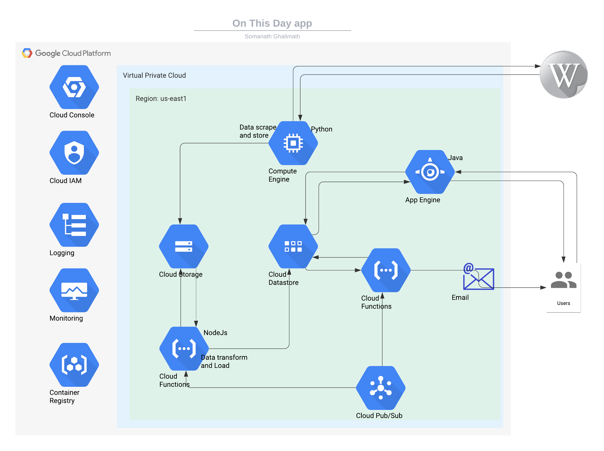

In the post-pandemic world cloud computing has gained a renewed attention and appreciation, that it rightly deserves. But normally when we think of cloud computing, we tend to think of enterprises, data in TBs, transactions in millions etc. While cloud perfectly fits the bill for all those computing intensive aspects. There is a big piece of the metaphorical cloud's pie that we as individual users are missing. Almost all cloud service providers have a free-tier made available to the customers. If one keeps in mind the limits of free usage, it is possible to utilize the cloud services to build a personal app, this makes the process of adaption of Cloud much more exciting and satisfying because at the end of the day, we will have a working application as an artifact as the output of this exercise on an individual level
With this goal in mind to create a personal app while remaining within free tier and making use of as many cloud services as the limitation allows, I started the process. First I had to decide on which Cloud service provider I would make use of. After comparing the service providers, I zeroed in on Google Cloud Platform(GCP) because it provided a lifetime of free services renewed each month(subject to change), this made much more sense since this app would reside in the cloud and serve my needs for a long time and actually leave me in control when to terminate the application. I wanted to have the below feature in my application
The backend architecture would now look something like this.

As the design started, I had to first create my database of all the facts/quotes and birthdays required by the application. For this I decided to write a simple web-scraper for Wikipedia's 'on this day' page for the entire year. As a host to run this application, I chose the Compute Engine and used Cloud storage APIs to store the created CSV files. The next challenge was to tranform and save the data from CSV to Cloud DataStore. For this I decided to utilize Cloud Functions to setup a serverless job to run multiple times with minimal configuration changes. I used the same job to transfer the events CSV file to DataStore. Now, with all the data setup done, the next step was to choose the service/tools to create the heart of the application. It was a pretty simple decision to go with Java+Spring boot combination along with JS for UI deployed in serverless managed container service App Engine. This was by-far most painless deployment of a webapplication because really the most effort involved was with coding the app itself and the serverless deployment was a breeze.
A combined code for all these pieces can be found in my GitHub repo
The application has further scope for improvement to utilize the Cloud NLP services while remaining within the free-limits to get the best of the found trivia returned. Architecting and deploying a solution while remaining under free limits has been a satisfactory and exciting coding experience. I encourage the readers to try out these services for yourself and let your imagination drive your coding.
I would welcome any comments/feedback on the application and feel free to DM me for anything. Happy Coding!